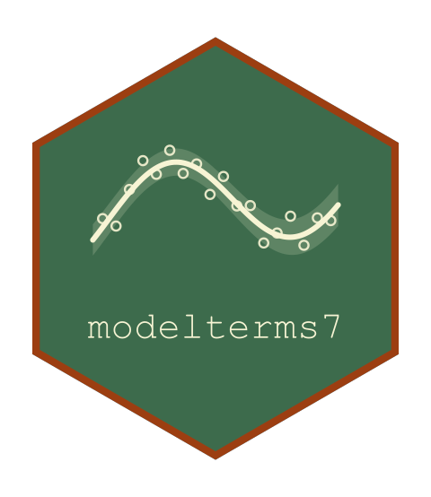

Continuing a Score-Driven Filter Past the Series
Source:R/gas.R
term_continue.GasTerm.RdComputes the level that the recursion reaches at rows that come after the observed ones.
Arguments
- term
A built score-driven term.
- psi
The term's parameters, named as
term_params().- f_past
The level at each observed row.
- s_past
The score at each observed row.
- newdata
The rows onto which to continue, carrying the variables that
byandtimename.- ...
Ignored.
- deriv
NULL, or a list giving the derivatives of the inputs in a vector ofmcoordinates of the caller's choosing:df_pastandds_past, one row per observed row andmcolumns, the derivatives off_pastands_past; anddpsi,length(psi)rows andmcolumns, the derivative ofpsi. The continuation is then differentiated along with its value, by the same recursion run on derivative rows, because the score past the data and its derivative are zero.
Value
A numeric vector of nrow(newdata) levels. With deriv, it
carries the attribute "jacobian", a nrow(newdata) by m matrix:
the derivative of each level in the caller's coordinates.
Details
The recursion is the filter's own, started from the levels and scores of the observed part. A lag that falls before the first observed row of a group takes the first observed level, which equals the starting level. Past the data the score is the quantity that changes: it has zero conditional mean by construction, the model's own defining property, so at a row whose response is not observed the driving term is its expectation and the continuation is the deterministic recursion $$f_{n+h} = \omega + \sum_i \kappa_i s_{n+h-i} + \sum_j \xi_j f_{n+h-j},$$ where the loadings contribute only while \(n+h-i\) is still an observed time. The continuation involves no simulation and no integration.
The new rows of a group are ordered by their own time and must come after
every observed time of that group. The continuation treats them as
consecutive steps whatever the spacing of the times, so that a gap between
two times counts as one step, as in the sample. A row that falls inside
the series belongs to the observed data, where the response is known, so
the filter must be run on it and not continued; such a row is rejected, and
the rows are named. A group that was not in the data of the fit is rejected
for the same reason: there is no state to continue. The term must have
been built with time.